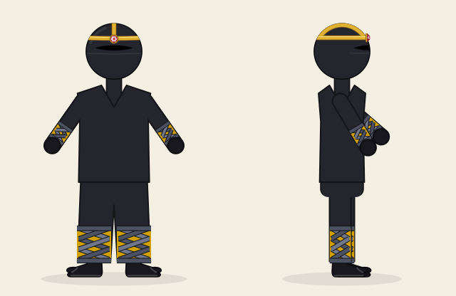
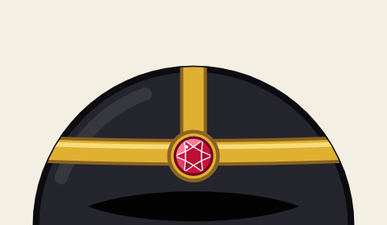

Dress Up reports · ^du_report(19) · 2026-10-24 · about Messed Up Dress Up, a game made with M and N · after ^du_report(18)
Ready to Re-mix
About 26 minutes to read (6,132 words, not counting tables and figures).
After so many new costumes, are the drawing routines ready to be re-mixed with other code down the line: the ninja's gems in the king's crown, in treasure chests, on fancy swords and shields, on the king's throne and in the throne room, and fourteen more scenarios like them? For each, what does the code make easy or hard today, and what re-organising would make it easy? And what re-organising can be done now, with no change to any picture? From ^ticket(564). Matthew's words:
- 2026-10-22: “mint and enqueue tonight--- recover from so many feature extensions to MUDU --- refactor code and make a report about other ways to improve --- E.g., maybe we want to draw gems in the kings crown in the future --- are the routines we have for ninja gems going to be ready to re-mix with other code down the line? ^ Please consider 17 different scenarios like this, of your choosing, and propose and perform any code re-org that you choose --- just report it as a report, so I can review later and we can discuss later.”
- then: “Gems for treasure chests, etc.”
- then: “Gems to decorate very fancy swords and sheilds, and the kinds thrown and thrown room, etc.”
- 2026-10-24: “564 --- yes, redo the remix preparation/reorg -- and file a fresh report with a fresh number.”
Short answers.
- Mostly yes, now. The ninja's gem was a general gem in all but its name: a stone, a shape, a middle, a size and its lights. This ticket gave it a home of its own and general names (
gemSvg02:210 andgemSideSvg02:242 in js/02-helpers.js; its stones and shapesGEMSTONES01:581 andGEMSTONE_SHAPES01:589), alookfor whoever calls it (what to mark it, how to name its clip, the gold it sits in, or none), and widths in proportion to its size. The ninja is drawn exactly as before, and its settings keep their names, as saved files have them. - Of Matthew's three, the crown and the chest are ready: a few calls each, shown below as a demonstration (not in the game). Swords, shields and thrones need a small change: each held thing is four drawings (toward us, from the side, from behind, on the floor), so a gem needs its place in each; and a throne room full of glimmering gems would cost frames, so in a place their lights should be still or share one animation (the 60 frames a second rule).
- Of the seventeen scenarios, 5 are ready, 8 need a small change and 4 need a re-organisation. The four: two costumes at once; animal suits made of named parts; the friend's drawing as plain text, for portraits and postcards; and one entry per costume for its settings, which today are written in four places.
- Three re-organisations were done, each its own commit, and no picture changed: one namer for ids made from content; the gem; and a table of what each costume wears for the shirt and pants, the first step toward two costumes at once. Each commit was proved by drawing the friend 12,570 ways on the release and on the commit: every drawing identical, byte for byte.
- The proof is a tool now,
tools/same_friend.mjs: it draws the friend in node on the laptop, with no browser, both pages in about nine minutes, and it found no noise: the release drawn twice is the same text every time.

drawNow 18:24 writes, caught in node from this branch, the same text as the release's. The ruby where the gold bands meet is now drawn by the shared gem, gemSvg 02:210 and gemSideSvg 02:242.
^ticket(560)), the part of the friend that ^ticket(564) re-organised.The seventeen scenarios
Matthew named three (the first three); the other fourteen are chosen from what the code shows is likely next: what the last weeks of tickets added, and what tickets ^ticket(562) and ^ticket(563) tried since (two costumes at once). Each says what the code makes easy or hard today (each function named with its part and line on this branch: 02:120 is js/02-helpers.js, line 120), what would make it easy, and what this ticket did for it. The verdicts: ready, a few calls to code that exists; needs a small change, a change to one or two drawings or tables; needs a re-org, a change of shape across many places, worth a ticket and a proof of its own.
| scenario | verdict | what it touches | |
|---|---|---|---|
| S1 | Gems in the king's and the queen's crown (Matthew) | ready | crownSvg 08:863, gemSvg 02:210, GOLD 01:580 |
| S2 | Gems in treasure chests (Matthew) | ready | seaChestSvg 14:3473, kingRoomSvg 13:1166, gemThingSvg 14:2403, gemSvg 02:210 |
| S3 | Gems on fancy swords and shields, the king's throne and the throne room (Matthew) | needs a small change | swordSvg 13:256, swordSideSvg 08:1556, shieldSvg 08:840, heldSvg 08:1657, throneSvg 13:1125, kingThrones 13:1139 |
| S4 | Two costumes at once, one over the other | needs a re-org | drawNow 18:24, COSTUME_CLOTHES 06:90, costumeOn 06:75 |
| S5 | A costume's pieces on other people in a place | needs a small change | peopleDrawMissing 25:1684, helperSvg 13:723, crownSvg 08:863 |
| S6 | A new animal suit from the suit parts | needs a re-org | ANIMALS 06:11, hoodBack 06:467, hoodSide 06:546, hoodFront 06:568, tailSvg 06:669 |
| S7 | A held thing put down in a place | needs a small change | HOLDABLES 01:471, THING_KINDS 14:3550, thingSvg 14:3708, helmetSvg 13:232 |
| S8 | The ninja's braided bands on other costumes | needs a small change | ninjaShin 06:316, NINJA 01:599 |
| S9 | A fabric shared by clothes and furniture | needs a small change | patternDef 02:93, personOwnIds 25:1720, shapeId 02:38 |
| S10 | A place's things in another place | ready | liftedThing 14:3651, thingSvg 14:3708, THING_PARAMS 14:3296 |
| S11 | The friend's drawing at another size, or as a picture on a wall | needs a re-org | drawNow 18:24, peopleDrawMissing 25:1684 |
| S12 | Scenery from the shared helpers | ready | leafyTree 10:29, pineTree 10:66, bushSvg 10:87, rockSvg 10:111, farLayers 14:3919 |
| S13 | Animations on the picture's clock | needs a small change | gemLights 02:189, lfoTimed 08:715, sceneLfo 08:705, picClock 08:142 |
| S14 | Settings rows made from data | needs a re-org | DEFAULTS 01:626, TABS 20:128, SHOWN_WHEN 20:1117, TAB_BOXES 22:340, RESIDENTS 01:245 |
| S15 | The settings file decides the picture | ready | picClock 08:142, seeded 10:9, shapeId 02:38, shapeClip 02:39 |
| S16 | A gem necklace or a brooch on any costume | needs a small change | gemSvg 02:210, drawNow 18:24 |
| S17 | The dragon's fire from things in a place | needs a small change | fireSvg 08:1908, FIRE_DEFS 08:1914, FIRE_STYLES 08:1692 |
S1. Gems in the king's and the queen's crown
ready (before this ticket: needs a re-org) · Matthew's scenario
Today: The crown, crownSvg 08:863, draws jewels of its own: three small diamonds on the band (squares turned on a corner, in one colour, 💎 the jewels' color, crownJewel, the side ones mixed toward blue) and pearls on its points. Before this ticket the cut gem was the ninja's: named for it, kept with its costume, always set in the ninja's gold and marked as the ninja's piece (data-ninja="gem", which the ninja's check counts), with its outlines a fixed width, right only at the forehead's size.
What would make it easy: Now gemSvg 02:210 takes a stone, a shape, a middle and a size in the caller's own units (the crown's are the round head's), its lights, and a look: its mark, its clip's name, the metal it sits in. The crown and the gem share one gold, GOLD 01:580. A crown with cut gems is three calls on the band and five on the points (the demonstration). Two things remain, and both are the feature, not the code: the crown has no view from the side (in profile crownSvg 08:863 draws its front), so a gem from the side (gemSideSvg 02:242) waits for one, a drawing of its own by Matthew's rule for new angles; and the crown's jewels are a colour, where cut gems want a choice of stones, a new setting.
Done in this ticket: the gem's home, its general names, its look and its widths in proportion (commit 2); the crown's gold is GOLD 01:580.

crownSvg 08:863, left), and the same crown with gemSvg 02:210 called on its band (a sapphire, a ruby and an emerald, glimmering) and on its points (small diamonds, loose). Drawn by drivers/demo564.mjs.S2. Gems in treasure chests
ready (before this ticket: needs a re-org) · Matthew's scenario
Today: The placeable treasure chest, seaChestSvg 14:3473, with 💎 gems in it (CHEST_TREASURE) heaps seven five-sided gems in the cave's colours (GEM_COLORS), drawn by a little gem of its own. The king's room draws its chest of gold again, inline in kingRoomSvg 13:1166, not with seaChestSvg 14:3473: two chests, two drawings. And the cave's 💎 gem thing, gemThingSvg 14:2403, has six styles of its own (cut, a cluster, a geode, a point, rough, a heart).
What would make it easy: gemSvg 02:210 with set: null draws a loose stone, with no gold rim, at any size: the chest's seven gems become seven calls (the demonstration). One chest for the sea and the king's room is a small change of its own, and changes the king's room's picture a little.
Done in this ticket: set: null, a loose stone, and widths in proportion (commit 2).

seaChestSvg 14:3473, left), and the chest of gold with seven loose cut stones from gemSvg 02:210 in the same seven places (no setting: set: null), some glimmering.S3. Gems on fancy swords and shields, the king's throne and the throne room
needs a small change (before this ticket: needs a re-org) · Matthew's scenario
Today: A held thing is drawn once for each view (Matthew's rule: each angle its own drawing): the sword toward us is the trap room's (swordSvg 13:256), then swordSideSvg 08:1556, swordBackSvg 08:1566 and swordFloorSvg 08:1625; the shield toward us carries the knight's arms (shieldSvg 08:840, armsFill 06:144), then shieldSideSvg 08:1575, shieldPlainSvg 08:1581, shieldFloorSvg 08:1642; heldSvg 08:1657 picks one. A throne, throneSvg 13:1125, has three jewel dots on its crown and a crest; a king's room holds up to six of them (kingThrones 13:1139), crossed swords and shields on its walls and crowned banners (kingRoomSvg 13:1166).
What would make it easy: With the shared gem each view can carry its gems: a pommel, a crossguard, a shield's corners, a throne's crown and crest (the demonstrations). Two things to settle first. Each held thing has four drawings, so a gem needs its place in each, or it vanishes when the friend turns. And in a place, many gems with their lights on are many SMIL animations of opacity, the cost ^ticket(118) measured with the fumes: the friend wears one gem, a throne room could hold twenty. So in a place, draw the gems still, or give them one shared animation, and measure with 📏.
Done in this ticket: the gem at any size, in any units, set or loose (commit 2).

swordSvg 13:256) with a ruby in its pommel and a sapphire in its crossguard, and the knight's shield (shieldSvg 08:840, his arms) with an emerald at each top corner and a ruby heart below the emblem, its shine on.
throneSvg 13:1125, in its room's own units, left) and the same throne with cut gems on its crown's three dots and a big sapphire for its crest, glimmering, its stars on.
gemSideSvg 02:242); every outline in proportion (commit 2), so a big gem looks like the small one.S4. Two costumes at once, one over the other
needs a re-org
Today: The settings could hold two already: every costume's settings live side by side in the one costume part, each under its own name (ninjaGem, knightA, robotStyle, 154 keys), so a second costume needs only one more key to name it. The drawing cannot: drawNow 18:24 works out about twenty flags from the one costume.kind (witch, knight, ninja and the rest, most in its first hundred lines, the moth's at line 249), and each costume's pieces are drawn where its flag is read, at fixed places in the order of layers: the shirt and pants, what is worn over them, the hat, what is on the back. Two hats, two shirts or two hoods need a rule for which is worn. Tickets 562 and 563 have since drawn the pair (a cat over the ninja, the ninja over a cat) and mocked up its controls, in a draft report not yet published (on the branch report-017).
What would make it easy: A list of what is worn, under to over, in place of one kind: each flag read from the list, and a rule per layer (the outer costume's hat and clothes are worn; pieces that do not meet, a mantle and a tail, both show). This ticket made the first layer a table: COSTUME_CLOTHES 06:90 says what each costume wears for the shirt and pants, where each was an if of its own in drawNow, so there the rule is one line.
Done in this ticket: COSTUME_CLOTHES 06:90 (commit 3).
S5. A costume's pieces on other people in a place
needs a small change
Today: People placed in a place (peopleDrawMissing 25:1684, ^ticket(439)) are drawn by drawNow 18:24 itself with their look swapped in, so a placed person wears any whole costume today. The castle's helpers, the cooks and the smith (helperSvg 13:723), are drawn from a short description of their own, as the healer is, with no head frame: a crown (crownSvg 08:863), a hat or the ninja's mask is drawn in the friend's round head's units, and cannot go on a helper's head.
What would make it easy: Give a helper's head a frame the hats understand (its middle and size in the round head's units), or make the helpers people (^ticket(439)'s templates); then any hat or crown goes on them.
S6. A new animal suit from the suit parts
needs a re-org
Today: ANIMALS 06:11 holds each suit's colours only. Its shapes are tests of the suit's name inside the hood and tail drawings (hoodBack 06:467, hoodSide 06:546, hoodFront 06:568, tailSvg 06:669): 49 tests of kind === … between them, and the sets FELINE and BIRDS. A fox made of the wolf's ears, the cat's nose and a bushy tail would add a case to each of them.
What would make it easy: Name the parts in the table: each suit's ears, nose, muzzle, tail, feet and fur as words (ears: "pointed", tail: "bushy"), with the drawings testing those, so a new suit made of known parts is one entry. A re-org with a byte-for-byte proof: every suit in every view is in tools/same_friend.mjs's cases already.
S7. A held thing put down in a place
needs a small change
Today: HOLDABLES 01:471 (8 things a hand holds) and THING_KINDS 14:3550 (50 things to place) are separate tables. The 🪖 helmet is the model: one drawing, helmetSvg 13:232, worn by the knight and placed as a thing. The sword, shield, staff, broom, bow, scepter and lasso already have a drawing lying on the floor, for crawling with them (^ticket(529): swordFloorSvg 08:1625, shieldFloorSvg 08:1642), but placed by a hand's point, not standing at 0, 0 as thingSvg 14:3708 places a thing.
What would make it easy: A thing for each holdable whose drawing is its floor view moved to 0, 0: a line in each table and a case in thingSvg 14:3708.
S8. The ninja's braided bands on other costumes
needs a small change
Today: ninjaShin 06:316 draws bands along any limb's joints (the shin and, since ^ticket(561), the forearm), braided or wrapped, with the skin between them or not; but its colours are the ninja's (NINJA.bandA, bandB, bandLine), read inside it, and its name says ninja.
What would make it easy: Pass the colours in (a look, as the gem now takes one) and give it a general name: a Roman sandal's straps, a mummy's wrappings or a gladiator's greaves are then a call. The same proof covers it (the ninja's bands in every pose).
S9. A fabric shared by clothes and furniture
needs a small change
Today: patternDef 02:93 makes a fabric (stripes, dots, hearts, stars, a spider web, ermine, leaves, the gnome's skirt, gingham) that any drawing could use, but only the friend does: drawNow 18:24 defines pat-shirt, pat-pants and the rest under fixed ids, which personOwnIds 25:1720 renames for each placed person. A couch, a rug or a tent draws stripes of its own.
What would make it easy: Name a fabric's id by what it is (shapeId 02:38, as the clips now are), so a place can define the same fabric once and two never clash; then a couch in gingham is a call.
S10. A place's things in another place
ready
Today: Ready: any object of any place can be lifted into another (📦, liftedThing 14:3651, ^ticket(284)), and every placeable thing is a drawing standing at 0, 0 (thingSvg 14:3708), its settings in THING_PARAMS 14:3296.
What would make it easy: Nothing is needed. One gap: a lifted object is drawn at its place's defaults, not with settings of its own.
S11. The friend's drawing at another size, or as a picture on a wall
needs a re-org
Today: drawNow 18:24 draws into the page's picture, reading and setting shared values as it goes: the joints, the face's frame, the figure's transform, the pieces shown. peopleDrawMissing 25:1684 gets a placed person's drawing by swapping their look into the state, calling drawNow 18:24 on a hidden picture and putting six values back after. This report's proof catches the text drawNow writes, in node: the drawing is text already, but only drawNow can make it.
What would make it easy: Split drawNow in two: one function that turns a look into the friend's drawing as text, sharing nothing, and the page's part that puts it in. A portrait of the friend in the throne room, a postcard, a placed person and the proof would all call the first.
S12. Scenery from the shared helpers
ready
Today: Ready, by the design rule: trees, pines, bushes and rocks (leafyTree 10:29, pineTree 10:66, bushSvg 10:87, rockSvg 10:111), and far mountains, forest and beach as layers any place can call (farLayers 14:3919, ^ticket(212)).
What would make it easy: Keep to the rule; the older crossing backdrops are the exception the instructions name.
S13. Animations on the picture's clock
needs a small change
Today: On the friend, ready: the gem's glimmer, stars and shine (gemLights 02:189) begin before 0 on the picture's clock, so drawing the friend again never restarts them. In a place they would not follow the music's LFOs (lfoTimed 08:715 and sceneLfo 08:705 are how a place's animations do), and their SMIL animates opacity, which in many copies costs frames (^ticket(118)).
What would make it easy: When a place draws gems, time their lights with lfoTimed 08:715 and the place's options, and keep them few: a small change where they are called.
S14. Settings rows made from data
needs a re-org
Today: A costume's settings are written in four places: their defaults (DEFAULTS 01:626, 154 keys in costume), their rows in the 🐯 Costume tab (TABS 20:128, 155 rows), when each shows (SHOWN_WHEN 20:1117, 151 rules) and which box holds it (TAB_BOXES 22:340, 154 keys listed again, in 27 boxes). Some rows are made from data already (each style's colour row, from its style table), and the castle's residents are made from one entry each (RESIDENTS 01:245: keys, defaults, rows, show-when rules and the mixing board's names).
What would make it easy: One entry per costume, as a resident's: its settings (key, default, kind of row, label), its box and when its rows show, and the four lists made from it. A re-org whose proof is the structure check: tools/same_friend.mjs compares the defaults, the tabs' rows and the show-when rules too.
S15. The settings file decides the picture
ready
Today: Ready (^ticket(274)): a drawing reads the time through picClock 08:142 and chance through seeds kept in the settings (seeded 10:9); Math.random is used only where settings are made (🎲 Surprise me, a new seed). An id that only has to be unique is named by its content, and since this ticket by one namer, shapeId 02:38 and shapeClip 02:39, where the ninja's clips and drawNow's door clips each had their own copy of the hash.
What would make it easy: Keep new ids on shapeId 02:38. The proof shows the rule holding: the friend drawn twice from the same settings is the same text, 12,570 times out of 12,570.
Done in this ticket: one namer for ids (commit 1).
S16. A gem necklace or a brooch on any costume
needs a small change
Today: The gem is ready; where to put it is not. The neck's width, the collar and the shirt's outline are worked out inside drawNow 18:24 (nw, the collar styles), and what is worn over the shirt is drawn there costume by costume (the witch's belt, the gnome's bodice, the wizard's cord), in each view.
What would make it easy: A few named points from drawNow (the collar's middle, the chest, the belt, each hand), in every view, handed to whatever is worn; a brooch is then a gem at the chest's point.
S17. The dragon's fire from things in a place
needs a small change
Today: fireSvg 08:1908 draws any of the six fires (FIRE_STYLES 08:1692) from a point, side on, toward us or away (^ticket(499)'s mock-up, drawn from every side), each shape moved by a CSS animation in style.css, so a place could use it as the friend does. Its gradients have fixed ids and are made once in the picture they are drawn in (FIRE_DEFS 08:1914), and that is the friend's picture.
What would make it easy: Make the fire's gradients in the place's picture once when it draws a fire (or name them by content), and a torch, a cauldron or a dragon statue breathing fire is a call (report 15 noted fire from things in a place as not built yet: ^du_report(15)).
What we re-organised
Three commits on the branch ticket-564-redo, off the release 0.0.428 (fad0545): the three made on 2026-10-22 on ticket-564-reorg (off 0.0.411), replayed onto today's code (the gem's code had changed under them once: its glimmer is off at first since 0.0.427, and the moved gem keeps that), each one re-organisation, with the agent instructions brought along in the same commit (the house rule) and the code's notes moved with the code they describe. None adds a feature; none changes a picture.
1. One namer for ids made from content, and the proof as a tool a9b0f33d23
A drawing's clip paths need ids, and ^ticket(274)'s rule names them by what they hold, never by chance, so the same settings draw the same text. The hash that makes such a name was written twice: in the ninja's clips and in drawNow's clips for walking through a door. A crown's gem with a shine, or any new drawing with a clip, would have needed a third copy.
shapeId02:38 (an id from a prefix and a hash of the text) andshapeClip02:39 (a clip path of one path, named so) are new in js/02-helpers.js, with^ticket(274)'s note;ninjaClipin js/06-costumes.js is gone: the ninja's slit, band and shine clips callshapeClip02:39;- the door clips (
fig-clip-…) indrawNow18:24, js/18-drawing.js, callshapeId02:38 in place of their own copy of the hash; tools/same_friend.mjsis new, the proof below; the agent instructions (The safety net; Testing: without a browser; The settings decide the picture; the ninja's clips) and tools/README.md say where both are.
The proof: 12,570 drawings of the friend made by the release (0.0.428, fad0545) and by this commit, 12,570 identical byte for byte (162.1 MB each side), 0 different, 0 that failed on one side only; the defaults, the tabs' rows and the show-when rules identical. The door clips are set on the page's own elements, outside drawNow's text, so the new namer was also checked against the old hash on 20,000 strings: the same ids, all 20,000. 6 files changed, 127 insertions(+), 11 deletions(-).
2. The gem, any drawing's 93bedf4e32
The ninja's gem (tickets ^ticket(557) and ^ticket(560)) was a general gem in all but its name: a stone, a shape, a middle, a size and its lights. Its functions were named and kept as the ninja's, set in the ninja's gold, marked as the ninja's piece, with outline widths right only at the forehead's size. Matthew's three scenarios all want it elsewhere.
- the stones and shapes,
NINJA_GEMSandNINJA_GEM_SHAPESin js/01-state.js, areGEMSTONES01:581 andGEMSTONE_SHAPES01:589, in a section of their own just before the ninja's, with a newGOLD01:580 (the gold, its outline and its light), which the ninja's gold (NINJA01:599) and the crown (crownSvg08:863) now read: the same three colours as before; - the gem's code, 120 lines in js/06-costumes.js, is a section of its own at the end of js/02-helpers.js, GEMS, under general names:
ninjaGemSvgisgemSvg02:210,ninjaGemSidegemSideSvg02:242,ninjaGemLightsgemLights02:189,ninjaCutgemCut02:186,ninjaGemPathgemstonePath02:137,NINJA_GEM_CUTSGEMSTONE_CUTS02:160,ninjaGemTonesgemstoneTones02:172,NINJA_GEM_REACHGEMSTONE_REACH02:136,ninjaRinggemRing02:159,ninjaStargemStarPath02:188, and the constantsGEM_CUT_PX,GEM_GLIMMER_S,GEM_SHINE_S; its notes, Matthew's words from tickets^ticket(557)and^ticket(560)among them, moved with it; - a
looksays how a caller names and sets its gem (GEM_LOOK02:133:mark, the attribute on its group;ids, its clip's prefix;set, the metal it sits in, or null for a loose stone); the ninja's isNINJA_GEM_LOOK06:301 (data-ninja="gem", "ninja-", the band's gold), andninjaGemFx06:300 still turns the ninja's settings into its lights, beside its head band in js/06-costumes.js; - the outline's width and the side view's widths and offsets are in proportion to the gem's size (at the ninja's sizes, 10 facing us and 11 from the side, they are the very numbers it drew before), so the same gem can be small on a forehead or big on a chest;
- the 🐯 Costume tab's two rows read the new tables; the ninja's settings keep their names (
ninjaGem,ninjaGemShape,ninjaGlimmer,ninjaGemStars,ninjaGemShine), as saved files have them;tools/checks/ninja557.mjsreads the new table names; the agent instructions' ninja section names the new functions, and a recipe, A gem, says how to call it.
The proof: 12,570 drawings of the friend made by the release (0.0.428, fad0545) and by this commit, 12,570 identical byte for byte (162.1 MB each side), 0 different, 0 that failed on one side only; the defaults, the tabs' rows and the show-when rules identical. Of the 12,570, 5,184 draw the ninja's gem: every stone, shape and mix of lights, in six views, on three heads. 7 files changed, 175 insertions(+), 145 deletions(-).
3. What each costume wears for the shirt and pants aff2b9dc2a
A costume worn in the friend's own clothes replaces the shirt and pants, so every pose, facing and animation draws it (the gnome's recipe, ^ticket(431)). Fourteen costumes did so with an if each, in the middle of the costume flags in drawNow 18:24. Two costumes at once (^ticket(562)) needs one place to say whose clothes are worn, and a new costume's clothes should be one entry.
- the fourteen
ifs indrawNow18:24 (js/18-drawing.js) are one line, which looks the costume up inCOSTUME_CLOTHES06:90; COSTUME_CLOTHES06:90 is new in js/06-costumes.js, beside the costumes' other tables: an entry per costume (the witch, the queen, the king, the knight, Robin Hood, the monk or dryad, the wizard, the gnome, the fairy, the scuba suit, the old diving suit, the robot, the cowgirl, the cowboy, the ninja), each taking the costume's settings and the friend's own shirt and pants and giving the two it wears, each with a note of its ticket;- drawNow keeps the flags and values it uses later (the robot's
R, the cowboy'sW, the fairy's tunic, the witch's few webs); the robot's and the cowboy's entries work out their own, a few object lookups more per drawing; - the agent instructions (how a costume is built; the ninja) say where a costume's clothes are now.
The proof: 12,570 drawings of the friend made by the release (0.0.428, fad0545) and by this commit, 12,570 identical byte for byte (162.1 MB each side), 0 different, 0 that failed on one side only; the defaults, the tabs' rows and the show-when rules identical. Every costume with clothes of its own is in the cases, in every view, pose and animation, and each of its rows in turn (the witch's few webs, the gnome man and woman, the dryad, each fairy tunic, every robot and cowboy style). 3 files changed, 56 insertions(+), 39 deletions(-).
tools/same_friend.mjs; the first bar is the release against itself, the noise floor. One run each, on the laptop, in node.How the proof works
tools/same_friend.mjs (committed in commit 1) loads each page's parts (29 now) in a node vm of its own, the page a stand-in that answers anything, as tools/check_load.mjs does. drawNow 18:24 ends by writing the friend's whole drawing into a new picture element, as text; the stand-in document keeps that text. The same cases are drawn on both pages in the same order, each from the defaults, with the settings set through the game's own set 20:869 (so a costume goes on as the 🐯 Costume tab puts it on, with its colours, beard and hat), and compared byte for byte. The cases:
- every costume (36, with none) facing us, to our left, to our right, away, and turned partway either way, in each of the six poses: 1,296 drawings;
- every costume in each of the eleven animations (walking, running, swimming, crawling, climbing, the jumps…), facing us, to our left and away: 1,188;
- every row of the 🐯 Costume tab shown for that costume (each choice, each colour, each toggle flipped, each slider at its ends), one at a time, facing us, to our left and away;
- each of the 8 things a hand holds, in each hand, toward us and in profile, with every costume, and the horse led and ridden;
- the ninja's gem: every stone (6) by every shape (6) by every mix of its three lights (8), in the six views, on three heads (the usual, a tall face, an alien one): 5,184 drawings.
- and, once per page, the structure: the defaults, every tab's rows (their data) and the names of the show-when rules.
The noise floor is 0: the release drawn twice, 12,570 cases each, gives the same text every time (Math.random is seeded alike on both sides before each case, as a dance picks its moves by chance, and the picture's clock is held at 0).
Would it notice? Yes. Against a copy of the release with the ruby's colour changed in its last hex digit (#d0103a to #d0103b), the ruby's 867 cases gave 722 different and 145 identical: the 145 are the views from behind, where the gem is not drawn (the clasp is). With Robin Hood's hose one digit browner (#5a3d22 to #5a3d23), all 167 of Robin's cases differed.
What it does not cover: the places (the friend is drawn with no background; the gem and the clothes are the friend's alone, and the places' code was not touched, but a refactor of a place needs the browser sweep); anything drawn outside drawNow's text (the door clips, fig-clip-…, are set on the page's own elements, so commit 1's change there was checked by comparing the old hash with the new namer on 20,000 strings: all the same); and the panel itself (its rows' data is compared, not how they look).
Other ways to improve
Ranked by what they would open up, against what they cost; plain, not urgent. Each is a ticket of its own, with the same kind of proof.
- The friend's drawing as text, sharing nothing. Split
drawNow18:24 (about 1,400 lines) into a function that makes the friend's drawing from a look and the page's part that shows it. It opens portraits, postcards and placed people without swapping the state, and it is what the proof already does by catching drawNow's text (S11). - One entry per costume. Write each costume's settings once (default, row, label, box, when it shows) and make the four lists from it, as the residents are (S14). A new costume's settings are then one entry, not four lists, and a whole kind of slip goes: a key added to one list and not another.
- What is worn as a list. After the entry per costume, read the costume's flags from a list of what is worn, under to over, with a rule per layer (S4). Two costumes at once in the game (after tickets
^ticket(562)and^ticket(563)), built onCOSTUME_CLOTHES06:90. - Animal suits by named parts. Name each suit's ears, nose, tail and feet in
ANIMALS06:11, so the 49 tests of a suit's name in the hood and tail drawings become tests of its parts (S6). - Named metals. Gold is written out 35 times in six parts, in four shades (
#e0b030, the crown's and the ninja's, nowGOLD01:580;#e8b923, the throne's;#e8c33a, the chest's;#d4a52a, the scepter's back). Naming each shade where it is (it changes no picture) shows which ones mean the same metal; making them one would change pictures, Matthew's call. - One treasure chest. The king's room draws its chest of gold inline; the placeable chest is
seaChestSvg14:3473. One drawing for both (S2) keeps the connected views alike. - Ids by content everywhere. Fabrics (
pat-shirt) and the fire's gradients (fi-g-glow) still have fixed ids, which is why placed people need theirs renamed (personOwnIds25:1720); naming them withshapeId02:38 lets any drawing use them twice (S9, S17). - A held thing is a thing. Link each of
HOLDABLES01:471 to a placeable thing drawn from its floor view (S7), as the helmet already is. - Prove every refactor of the friend on the laptop. Run
tools/same_friend.mjsbefore committing a refactor of the friend, and grow it to the places (it draws the friend only; the browser sweep on GitHub covers the places).
What next
- 1. Read the three commits and decide each: merge, keep or drop each of
ticket-564-redo's three commits (one namer for ids; the gem; what each costume wears for the shirt and pants). The third meets two costumes at once (tickets^ticket(562)and^ticket(563)drew and mocked it up; putting it in the game is a ticket still to make): merge it before that work, or let that work take it in. No picture changes, so none needs a version of its own. - 2. Gems in the crown: if Matthew wants it: a 💎 choice of stone for the queen's and king's crown, drawn with gemSvg on the band, and a view of the crown from the side so the gems show in profile (a feature: the crown's picture changes).
- 3. Gems in the treasure chest: if wanted: the chest's 💎 gems as loose cut stones (gemSvg, set: null), and the king's room's chest of gold drawn by seaChestSvg, one chest for both.
- 4. Gems on swords, shields and thrones: if wanted: a place for gems in each view of the sword and the shield (toward us, side, back, floor), and on a throne's crown and crest; in a place, the gems' lights still or shared, measured with 📏 at 60 frames a second.
- 5. The friend's drawing as text: split drawNow into the drawing (a look in, the friend's SVG text out) and the page's part, proved with tools/same_friend.mjs.
- 6. One entry per costume, then what is worn as a list: the costume's settings written once, the four lists made from it (proved by the structure check), then the flags read from a list of worn costumes, for
^ticket(562). - 7. Animal suits by named parts: ears, nose, tail and feet named in ANIMALS, the hood and tail drawings testing those, every suit proved byte for byte.
- 8. Keep the proof: run tools/same_friend.mjs on the laptop before every refactor of the friend, and add the places to it.
How this was put together
Written on 2026-10-22 by Claude, for Matthew, from ^ticket(564), as ^du_report(18) on the branch ticket-564-reorg off 0.0.411; brought up to date on 2026-10-24 at his word ("redo the remix preparation/reorg -- and file a fresh report with a fresh number"): the three commits replayed onto main at fad0545 (0.0.428) as ticket-564-redo, in the worktree ~/kcg-564b, the proof run again on today's code, and the report numbered 19, since ^du_report(18) is now the Story Scripts Guide. A draft, not pushed: it is published on Matthew's word.
The code was read at the release, and the scenarios' functions are looked up in this branch's parts when the page is built (drivers/build.py), so every line number is the branch's. The three re-organisations were made one at a time; after each, python3 tools/check_script.py dress-up/index.html and node tools/check_load.mjs dress-up/index.html passed, and tools/same_friend.mjs compared the release with the commit, one run each, in node under nice, one heavy job at a time (the laptop shuts down under load; no browser ran).
The pictures in the scenarios are a demonstration, not the game: drivers/demo564.mjs loads the branch's parts in node and calls the re-organised gem beside drawings the game already has (the crown, the chest, the sword, the shield, a throne), to show what Matthew's three scenarios would look like. Figure 1 is the game's own drawing of the ninja, caught the same way. They were looked at as PNGs made by ffmpeg's librsvg; in the page they are the SVGs, their lights moving.
The data: data/report.json (the words, the scenarios, the steps) and data/same.json (every proof run's summary), both embedded in this page; drivers/build.py draws the page, drivers/demo564.mjs the pictures, tools/same_friend.mjs the proof.